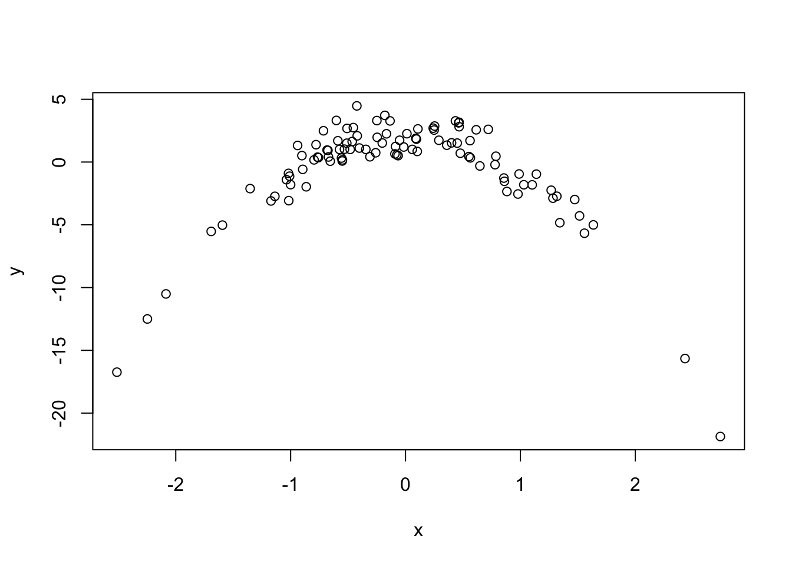
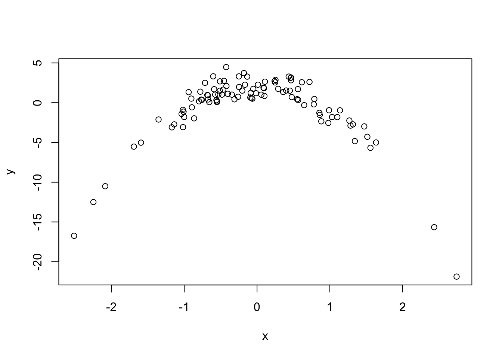
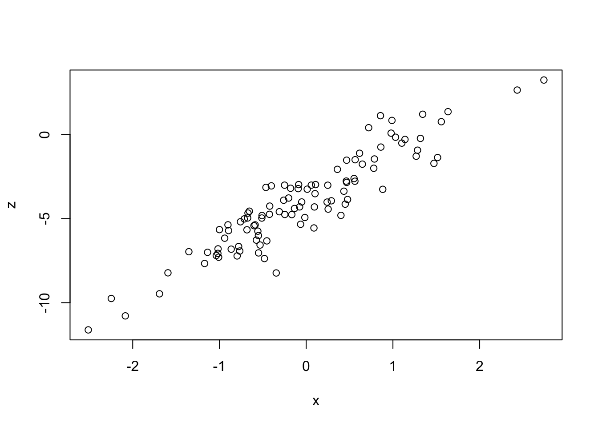
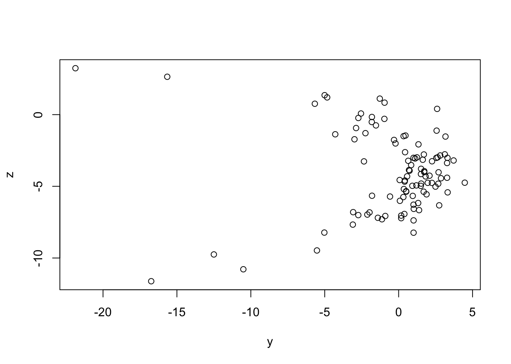
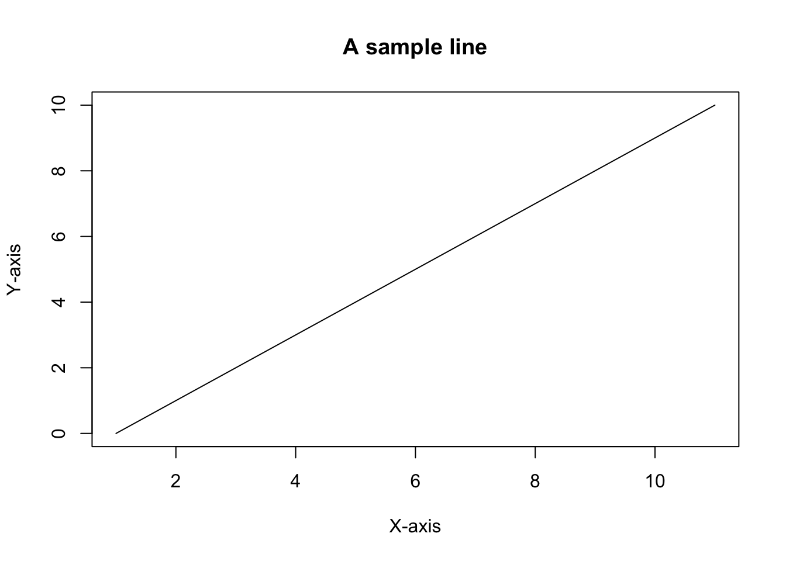
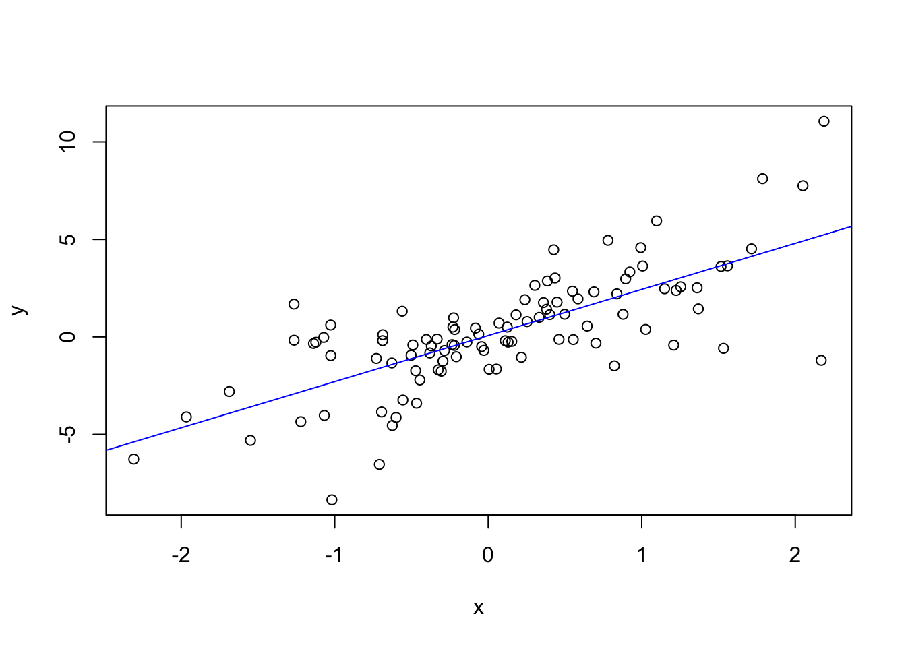
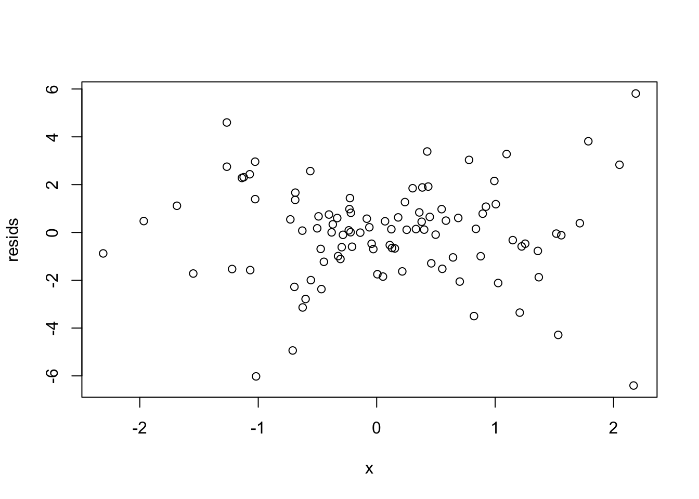
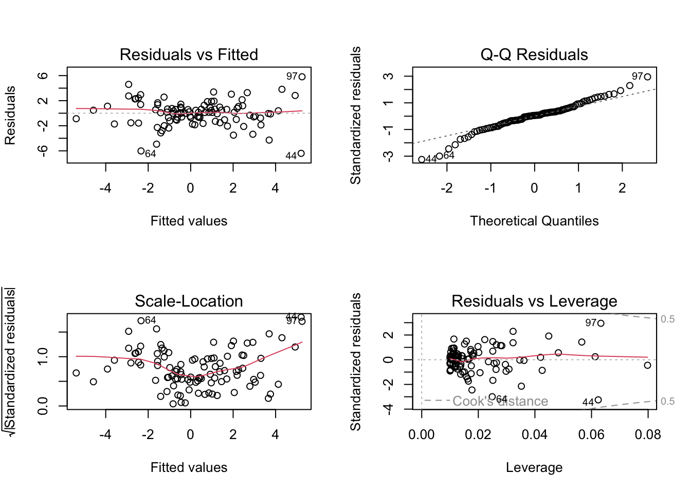
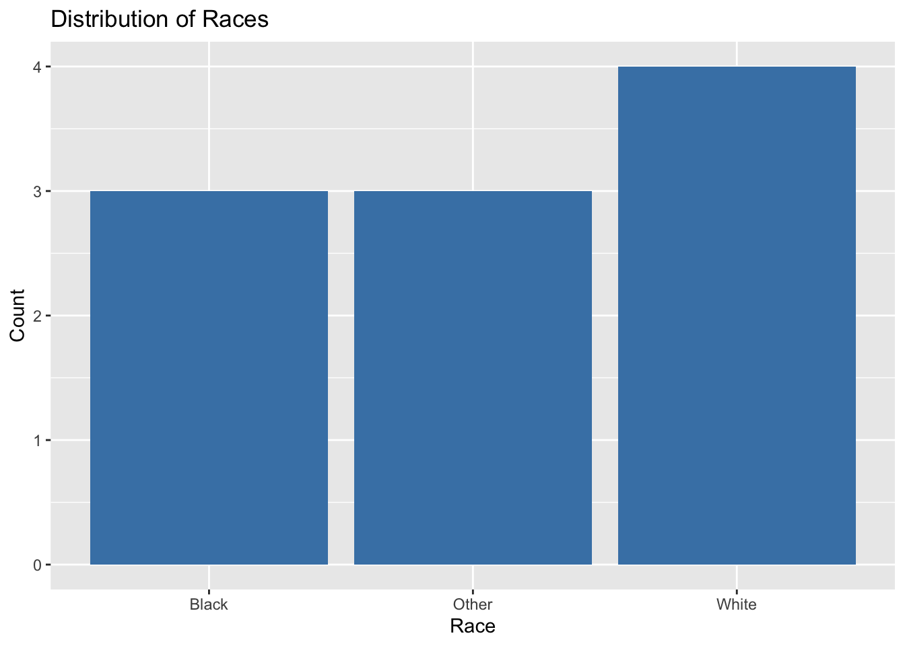
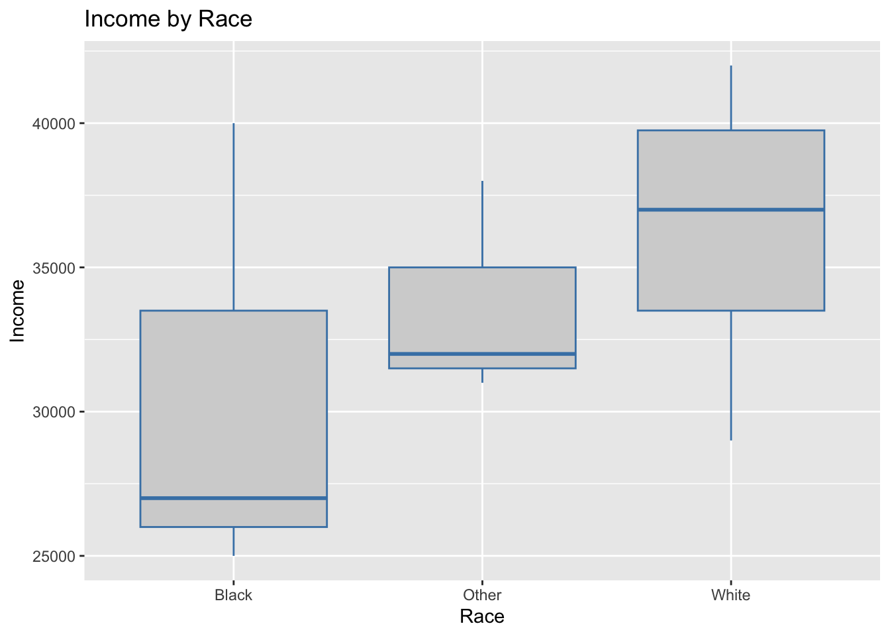

plot(x, y)
cor(x, y)[1] -0.09107752On regression
We explore the case of bivariate regression when attempting to measure and model conceptions of in/justice.
This week we focus on more examples from our darta sources; we’ll take a closer look at the General Social Survey data, or GSS.
The data is located in the gssr package in R (see part III). You should become very familiar with the GSS data. Please explore the website as we will be prioritizing the use of the GSS data for the remainder of our course. The use of the GSS data will allow us to consider the meaning of social justice in the context of attitudes and beliefs around social issues.
Ahead of modeling multiple variables, we’ll examine the importance of underlying theoretical anlayses ahead of solely doing statistical investigations.
Let us begin with a set of three variables: \(x\), \(y\), and \(z\).
We will assume that there is a hypothesized association between all three variables. However, let us also assume that we have not yet taken time to properly structure the relationships between the variables. Namely, we have yet to consider if \(z\), for example, is a mediator, moderator, or spurious variable.
Let us take a look at the scatterplots between each pair of variables.
plot(x, y)
cor(x, y)[1] -0.09107752Take note of the value of the correlation coefficient.
Let us take a look at the scatterplots between each pair of variables.
plot(x, z)
cor(x, z)[1] 0.9284953Take note of the value of the correlation coefficient.
Let us take a look at the scatterplots between each pair of variables.
plot(y, z)
cor(y, z)[1] -0.04660941Take note of the value of the correlation coefficient.
In our previous lectures, we have discussed the function of assumptions and principles in regression analysis. In progressing towards different types of tests, it is important to consider the specific assumptions for any given test.
Analyzing relationships among social science variables has an assumptions of linearity. However, this assumptions is not always correct. The adoption of this assumption is based on a host of factors. Most notably, that many relationships have been found to be linear when considered in the empirical sense.
Some additional assumptions are as follows:
The sample is representative of the population
The variables of interest are normally distributed
There are no outliers in the data
Independence
There is a linear relationship between the independent variable(s) and dependent variable(s)
In statistics, we often inquire about the relationship between two variables, \(X\) and \(Y\).
These variables are sets that contain values (observations) as noted before. To launch our discussion, we will begin with a sample line.
plot(0:10, type="l", main = "A sample line", xlab = "X-axis", ylab = "Y-axis")
In mathematics, two variables, \(x\) and \(y\) may be related to each other in various ways. These relationships form the basis for many inquiries in statistics. However, mathematical modeling most often involves identifying the parameters in which we can use to assess the validity of the stated relationship. In this way, we examine the difference between exact and inexact relationships.
The line in the graphic above follows the standard notation: \[y = a + bX\]
Regression analysis is a standard analysis in many statistical studies.
There are many different types of regression. We’ll continue with our exploration of bivariate regression analysis and focus on some of the base assumptions as it relates to study development.
We will begin by looking at the underlying assumptions of regression analysis.
These assumptions are the technical (or structural) components of our analyses, and should be checked at the initiation of a research study, starting with data collection or understanding how data was collected if it is a secondary analysis.
Let us take two variables, \(x\) and \(y\).
cor(x, y)[1] 0.7293926# Fit simple linear regression model
model <- lm(y ~ x)# Examine regression outputs
summary(model)
Call:
lm(formula = y ~ x)
Residuals:
Min 1Q Median 3Q Max
-6.4027 -1.0071 0.1154 1.0017 5.8115
Coefficients:
Estimate Std. Error t value Pr(>|t|)
(Intercept) 0.07185 0.20452 0.351 0.726
x 2.36515 0.22408 10.555 <2e-16 ***
---
Signif. codes: 0 '***' 0.001 '**' 0.01 '*' 0.05 '.' 0.1 ' ' 1
Residual standard error: 2.035 on 98 degrees of freedom
Multiple R-squared: 0.532, Adjusted R-squared: 0.5272
F-statistic: 111.4 on 1 and 98 DF, p-value: < 2.2e-16# Check regression coefficients
coeff <- coef(model)
coeff(Intercept) x
0.07184615 2.36514669 # Check R-squared value
rsq <- summary(model)$r.squared
rsq[1] 0.5320136# Generate predictions
pred <- predict(model) # call this object to show the predicted values of the model# Plot the regression line
plot(x, y)
abline(model, col="blue")
# Check residuals
resids <- residuals(model)
plot(x, resids)
# Diagnostic plots
par(mfrow=c(2,2))
plot(model)
# Check significance of predictor
anova(model)Analysis of Variance Table
Response: y
Df Sum Sq Mean Sq F value Pr(>F)
x 1 461.44 461.44 111.41 < 2.2e-16 ***
Residuals 98 405.91 4.14
---
Signif. codes: 0 '***' 0.001 '**' 0.01 '*' 0.05 '.' 0.1 ' ' 1desc(df$income) [1] -25000 -35000 -42000 -31000 -27000 -38000 -29000 -40000 -32000 -39000# Bar plot of the categorical variable (race)
ggplot(df, aes(x = race)) +
geom_bar(fill = "steelblue") +
labs(x = "Race", y = "Count") +
ggtitle("Distribution of Races")
# Box plot of income by race
ggplot(df, aes(x = race, y = income)) +
geom_boxplot(fill = "lightgray", color = "steelblue") +
labs(x = "Race", y = "Income") +
ggtitle("Income by Race")
In previous lectures, we discussed some methods to hypothesize around the relationship between two variables that are categorical in nature.
This week we’ll explore the GSS and ANES data in more detail. This is a reminder to deepen your understanding of the data set you will use based on the notes provided below from week 11.